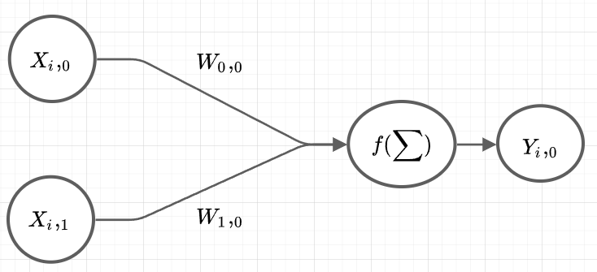
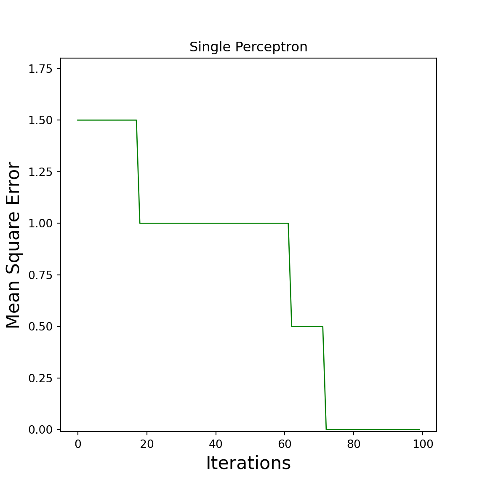

Chapter 2 Single Perceptron
In this chapter i will teach you how to code a single Perceptron in python with only the numpy package. Numpy uses a vectorizible math structure in which you can easily calculate elementwise or do stuff like normal matrix multiplications with just a symbol (i always interpret vectors as one dimensional matrices!). At the most of the time, its just translating math formulas into python code without changing its structure.
First of all do we start with the necessary parameters, that are explained later:
Number of iterations over all the training dataset := epochs
Learning rate := \(\alpha =\) alpha
Bias value := \(\beta =\) bias
and the activation function:
\[
step(s)=
\begin{cases}
1,& s \geq \beta\\
0,& s < \beta
\end{cases}
\]
This function is named the heavyside-function and should be the easiest activation function to start with. If the weighted sum is smaller than the bias \(\beta\), it will send the value zero to the next neuron. Our brain works with the same behavior. If the electricity is too small, the neuron will not activate and the next one dosent get any electricity.
The training dataset is the following:
\[
\left[
\begin{array}{cc|c}
x_i,_1 & x_i,_2 & y_i \\
\end{array}
\right]
\]
\[
\left[
\begin{array}{cc|c}
0 & 0 & 0 \\
0 & 1 & 1 \\
1 & 0 & 1 \\
1 & 1 & 1 \\
\end{array}
\right]
\]
The provided training dataset contains the X matrix with two inputs for each scenario and the Y matrix with the correct output (each row contains the input and output of one scenario). If your looking exactly you can see that this is the OR-Gate. Later you will see why these type of problems are the only suitable things to do with a single neuron.
The needed python imports are the following:
import numpy as np
import matplotlib.pyplot as pyplot( Do you see more imports than only the numpy package? Yes or No )
Now that we have all the needed parameters and settings, i can give you a quick overview of the algorithm.
2.1 Neural Network Basics
In a NN we are having two basic parts, the forward pass and the backward pass. In the forward pass do we calculate the weighted sum of each input neuron with its weights of the layer and evaluating the activation function with it, to calculate the output. In the backward pass do we analyzing the error to adjust the weights accordingly. This is it! This is all a NN will do. I explained everything to you. Have a good life…
Ahh no no ok we have a deeper look into it :)
What exactly is the forward pass in a single Perceptron? Its just the evaluation of the acvtivation function with the weighted sum like i said, so you have for one scenario of the training dataset, the following:
\[
step(W \cdot x^T_i) = y_i
\]
This is the normal approach to use this formula to iterate over all scenarios in the training dataset…
But i think its not the right way to describe it, because it gets very confusing to interpret it for all scenarios at the same time.
My next approach is to consider all scenarios in the training dataset in one formula. If your data isnt that huge, its a much faster approach as well. First of all do we need to interpret the new dimensions of \(W\) and \(X\).
We have \(X\) as:
\[
X = \left[
\begin{array}{cc}
0 & 0 \\
0 & 1 \\
1 & 0 \\
1 & 1 \\
\end{array}
\right]
\]
each row describes the inputs for each neuron in the scenario \(i\).
For the weights \(W\) do we have for example:
\[
W =\left[
\begin{array}{c}
0.1 \\
0.2 \\
\end{array}
\right]
\]
The new formula looks like this:
\[
step(X * W) = Y
\]
The \(*\) symbol defines a matrix to matrix multiplication. For example if you take a look at the \(i\)-th row (scenario) of \(X\) you will see the following:
\[
Y_i,_0 = step([X_i,_0 \cdot W_0,_0 + X_i,_1 \cdot W_1,_0 ])
\]
and \(Y_i,_0\) is the approximated output of the \(i\)-th scenario. Now can we look at the NN and compare the formula with it:

Yes it is the same, its the weighted sum of the inputs and evaluated the activation function with it, to calculate the output of the scenario \(i\).
2.2 Forward pass
Now can we create the so called forward() function in python:
def forward(x, w):
return( step(x @ w) )(Numpy provides us with the @ symbol to make a matrix to matrix multiplication and the .T to transpose)
Because we want to put one dimensional matrices into the step() function, its necessary to use numpy for the if-else statement:
def step(s):
return( np.where(s >= bias, 1, 0) )In the next step will we create an small example for the forward pass:
X = np.array([
[0,0],
[0,1],
[1,0],
[1,1],
])
W = np.array([
[0.1],
[0.2]
])
bias = 1
Y_approx = forward(X, W)
print(Y_approx)## [[0]
## [0]
## [0]
## [0]]And these are all the generated outputs of our NN over all scenarios. Now do we need to calculate the error and adjust the weights accordingly.
2.3 backward pass
We need the Delta-Rule to adjust the weights in a single Perceptron: \[ W(t+1) = W(t) + \Delta W(t) \] with \[ \Delta W(t) = \alpha \cdot X^{T} * (Y - \hat{Y}) \] and \(\hat{Y}\) is the output of the NN. Translatet to code it is:
def backward(W, X, Y, alpha, Y_approx):
return(W + alpha * X.T @ (Y - Y_approx))With the result of the forward pass and and the correct outputs, do we have the following:
Y = np.array([
[0],
[1],
[1],
[1]
])
alpha = 0.01
W = backward(W, X, Y, alpha, Y_approx)
print(W)## [[0.12]
## [0.22]]and these are the new weight.
2.4 Single Perceptron
Now do we want to do the same process multiple times, to train the NN:
X = np.array([
[0,0],
[0,1],
[1,0],
[1,1],
])
Y = np.array([
[0],
[1],
[1],
[1]
])
W = np.array([
[0.1],
[0.2]
])
alpha = 0.01
bias = 1
epochs = 100
errors = []
for i in range(epochs):
Y_approx = forward(X, W)
errors.append(Y - Y_approx)
W = backward(W, X, Y, alpha, Y_approx)The KNN is trained. In the next step do we analyze the errors of each epoch. The best way to consider all the errors of each scenario is to measure the mean-square-error with the following formula: \[ Errors = \frac{1}{2} \cdot \sum(Y-\hat{Y})^2 \] or as python code:
def mean_square_error(error):
return( 0.5 * np.sum(error ** 2) )Now do we need to calculate the mean-square-error for each element in the list errors which can be performed with map():
mean_square_errors = np.array(list(map(mean_square_error, errors)))To plot the errors, im using the following function:
def plot_error(errors, title):
x = list(range(len(errors)))
y = np.array(errors)
pyplot.figure(figsize=(6,6))
pyplot.plot(x, y, "g", linewidth=1)
pyplot.xlabel("Iterations", fontsize = 16)
pyplot.ylabel("Mean Square Error", fontsize = 16)
pyplot.title(title)
pyplot.ylim(-0.01,max(errors)*1.2)
pyplot.show()
plot_error(mean_square_errors, "Single Perceptron")
If you survived until now, you have learned how to program a single Perceptron!
2.5 Appendix (complete code)
import numpy as np
import matplotlib.pyplot as pyplot
X = np.array([
[0,0],
[0,1],
[1,0],
[1,1],
])
Y = np.array([
[0],
[1],
[1],
[1]
])
W = np.array([
[0.1],
[0.2]
])
alpha = 0.01
bias = 1
train_n = 100
def step(s):
return( np.where(s >= bias, 1, 0) )
def forward(X, W):
return( step(X @ W) )
def backward(W, X, Y, alpha, Y_approx):
return(W + alpha * X.T @ (Y - Y_approx))
errors = []
for i in range(train_n):
Y_approx = forward(X, W)
errors.append(Y - Y_approx)
W = backward(W, X, Y, alpha, Y_approx)
def mean_square_error(error):
return( 0.5 * np.sum(error ** 2) )
mean_square_errors = np.array(list(map(mean_square_error, errors)))
def plot_error(errors, title):
x = list(range(len(errors)))
y = np.array(errors)
pyplot.figure(figsize=(6,6))
pyplot.plot(x, y, "g", linewidth=1)
pyplot.xlabel("Iterations", fontsize = 16)
pyplot.ylabel("Mean Square Error", fontsize = 16)
pyplot.title(title)
pyplot.ylim(-0.01,max(errors)*1.2)
pyplot.show()
plot_error(mean_square_errors, "Single Perceptron")